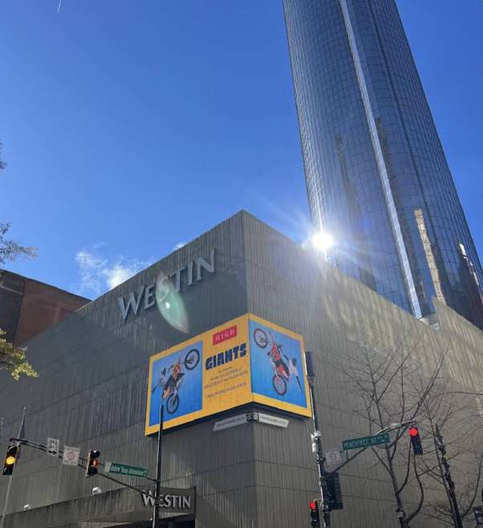
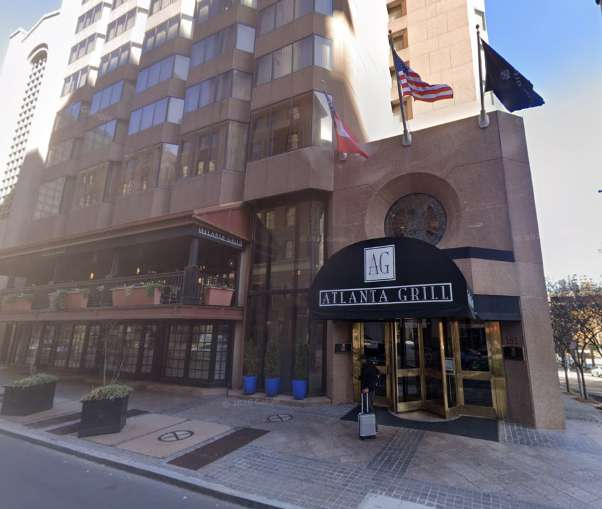
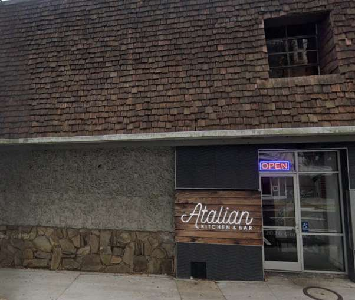
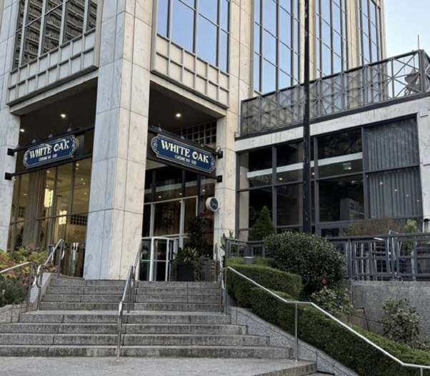

01 • LEARN
I need the story first.
Go through the six opening episodes in order. Best if you have not read the packets.
This is your private ATL wine clubhouse: part Sundial sparkle, part Bravo confessional, part Spelman-brain study machine. You do not need to read either packet first. Start the season, meet the cast, walk the locations, and collect the receipts. Then production will see what you can do without the notes.
You never need to remember a mode name. Pick the outcome you want and the app takes you to the right room.
Go through the six opening episodes in order. Best if you have not read the packets.
Use quick recognition practice. Misses automatically return at the Reunion.
Speak without choices, compare with the benchmark, then grade facts and delivery separately.
Put every scene in geographic order and rehearse the transitions from start to finish.




PREVIOUSLY IN THE LOUNGE: Champagne survived war and still came dressed for a celebration, Chardonnay arrived with three personalities and no apology, Rosé corrected everybody who kept calling her a grape, Pinot Noir showed up thin-skinned and iconic, and Cabernet brought blind-tasting receipts from the Judgment of Paris. Your assignment: know the material so well it feels like personality, not homework.
Before you memorize a single receipt, read the whole story. Each episode now begins with one uninterrupted chapter and a retell spine. The study sheets, memory hooks, and practice tools come afterward, once you know what the facts are building toward.
The cast has arrived. Production is reviewing the footage.
Learn the ridiculous private memory hook and the clean version you can actually say to guests.
Fact-check the legends. Dom Pérignon’s publicist is already nervous.
Recognition under pressure. Sixty wine questions plus route, history and tour material.
Pronunciation reveal and self-grade using the packet’s phonetics.
Free recall with zero answer choices. This is where “I recognize it” becomes “I know it.”
Put the facts back into the actual walking tour and practice delivery.
Map, venue photos, visual cues, and a recognition quiz.
Practice answering the obvious follow-ups without sounding like a textbook.
Twenty-two details pulled directly from the wine packet that round out the main question bank.
One button, one compact review, optional audio playback.
Missed material returns until it clears. Production keeps the tapes.
The exact tour-game material stays separate so you can practice hosting the guest game too.
Greenlight target: 85% recognition, 80% recall, 80% delivery, full route, no reunion backlog.
The map image comes directly from the training script. Use it for route shape; the photo cards below are your visual-location memory.
These are source-faithful deep cuts from Najee’s wine packet: monks, marketing, regional style, luxury mythology, chemistry, and the little facts that make you sound like you actually read the packet.
Pick a cast member, speak the story out loud, then roll into Rapid Pour or Mic Check to see whether it stuck.
Recognition = quiz performance. Free Recall = confessionals. Host Delivery = spoken delivery self-grades. Route = scenes cleared. This keeps “I recognize the answer” separate from “I can actually say it.”
The route, venue facts, Georgia wine history, Prohibition material, wine stories, and phonetics are locked to the two supplied training PDFs. Local copies of the packet visuals keep the study cards working offline.
Export downloads a backup. Import restores a valid backup. Reset scores clears attempts, misses, route grades, and badges but keeps watched learning episodes, private host notes, study-day history, and audio preferences. Nuclear reset removes everything saved by this app on this browser, including learning completion and audio preferences.